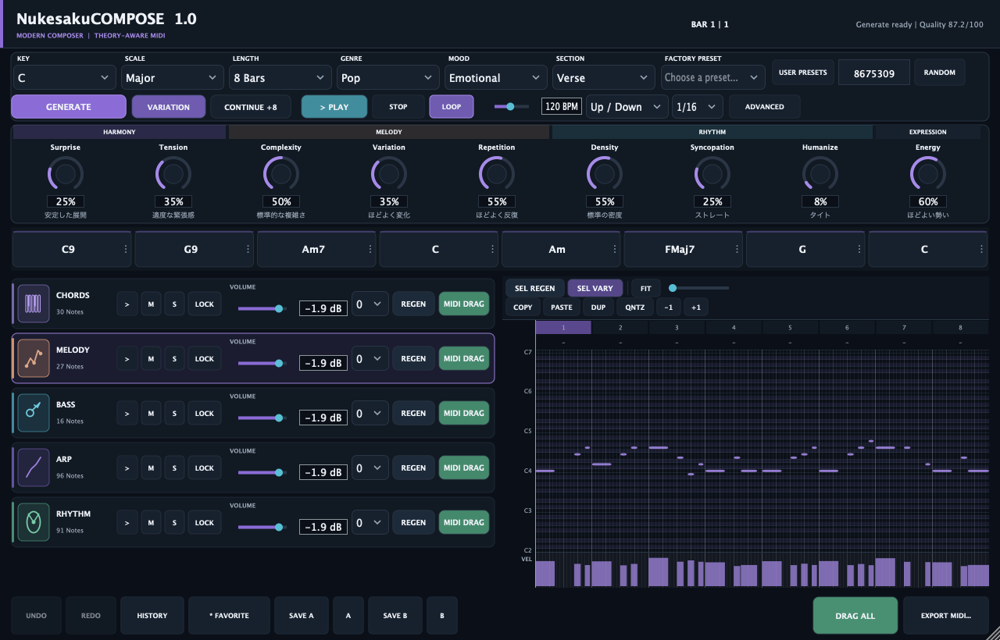
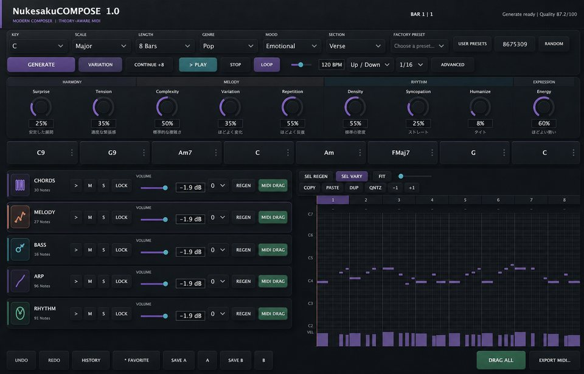
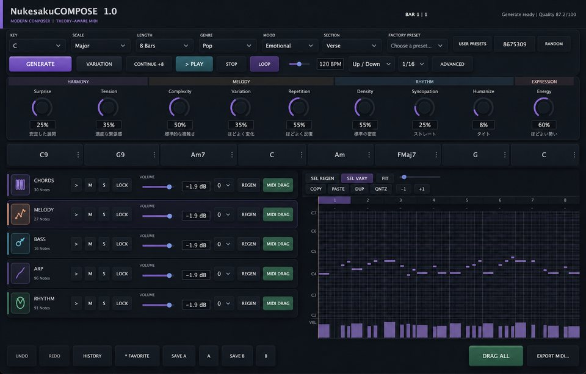
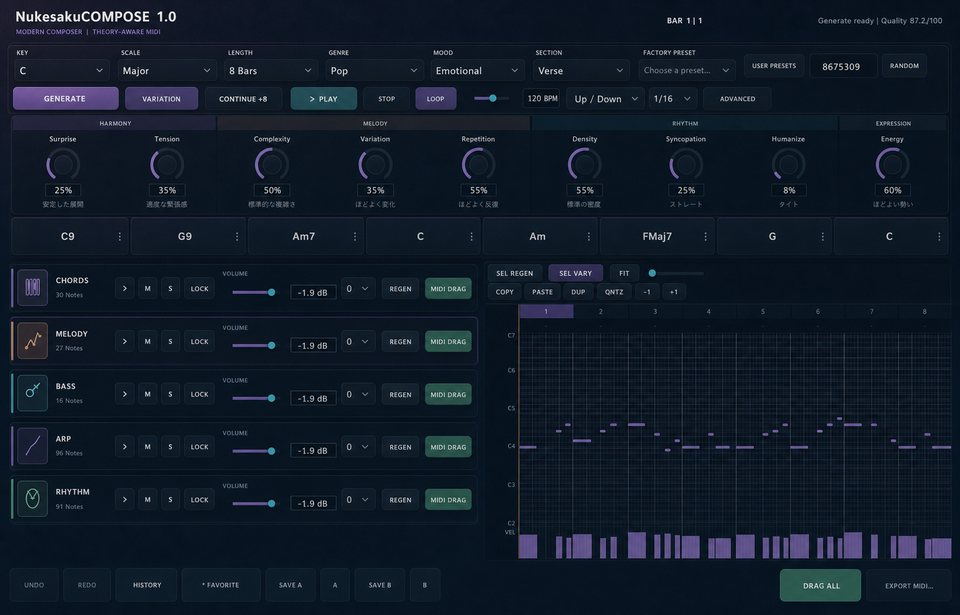
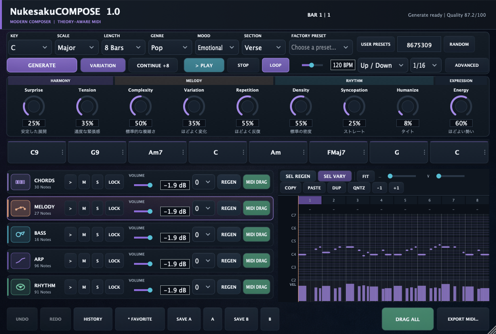

Latest Update / 1.1.0
見た目を深く。操作は、これまでどおり。
NukesakuCOMPOSE 1.1.0は、直前の正式版UIを土台にしたVisual Polishです。作曲機能や操作フローを変えず、生成画像の繊細な質感とJUCEの操作性を両立するHybrid Visual Finishへ進化しました。
オリジナルの抽象テクスチャを低濃度で使用
重要Actionに控えめな奥行きとクリック感
Panel・Lane・Chordを薄い差で整理
文字・状態・Hit Areaは従来どおりネイティブ描画
1.0 / Feature Evolution
まず、Beta版で見えた課題から始めました
Beta版を完成させたことで、「生成できる」だけでは本当の作曲支援にならないことが見えてきました。Beta版では、コードは表示と試聴までで、自分で別のコードへ変更することはできませんでした。Piano Rollも生成されたノートを見るための画面で、ノートを直接編集することはできませんでした。
正式版では、良いメロディは残す、気になる小節だけ直す、コードを自分で選び直す、ノートをマウスで自然に編集する、続きをつなげる、という実際の作曲の流れを中心に設計を見直しています。
Evolution Highlights
1.0で加わった主な進化
Generation Engine 2.0
5つのレーンが、ひとつの曲としてつながる
コード、メロディ、ベース、アルペジオ、リズムが別々にランダム生成されるのではなく、同じハーモニー・フレーズ・セクションを共有する設計へ変更しました。
Melody Engine 2.0
音の並びから、覚えられるフレーズへ
短いモチーフを作り、繰り返し、変化、呼びかけと応答、クライマックス、解決を考えて発展させます。複数候補から、歌いやすさやコードとの相性が良いものを選びます。
Keep the Good Parts
良いところを残し、悪いところだけ直せる
レーンや小節のLockに加えて、選択した小節だけの再生成・Variationに対応。気に入った部分を壊さずに試行錯誤できます。
Continue
現在の曲らしさを保ったまま続きを作る
選んだLengthに合わせて続きを生成。元のモチーフ、リズム、音域、コードの流れを受け継ぎ、無関係なフレーズを後ろへ付け足さないよう改善しました。
Chord & Piano Roll Editing
「見るだけ」から、自分の手で直せる画面へ
Beta版ではできなかったコードの直接変更に対応し、候補からの置き換え、響きの提案、転回形やテンション変更が可能になりました。Piano Rollも正式に編集できるようになり、ノートの作成・移動・長さ・Velocity、縦横Zoom、複数選択、Copy、Paste、Duplicate、Quantize、Transposeに対応。選択を保ったままPitchを動かせるなど、マウス操作も改善しています。
Premium UI / UX
機能は深く、最初の操作はシンプルに
Key、Genre、Mood、Sectionを選んでGENERATEする基本の流れはそのまま。詳細設定はAdvancedへ整理し、必要な人だけが深く調整できるUIにしました。
Beta版と1.0以降の違い
表は横にスクロールできます →
| 項目 | 無料Beta版 | 1.0以降 |
|---|---|---|
| 生成の考え方 | 5レーンのアイデアを生成 | 曲全体の関係を共有して生成 |
| メロディ | スケール・コードを考慮 | モチーフとフレーズ構造まで評価 |
| 直し方 | レーン単位の再生成 | 選択した小節だけ再生成・変化 |
| 曲の続き | ― | 元の特徴を引き継いでContinue |
| コード | 表示・試聴のみ（変更不可） | 自分で置き換え・候補選択・響きを編集 |
| Piano Roll | ノート表示・試聴のみ（編集不可） | ノート作成・移動・長さ・Velocity・複数編集 |
| 編集の操作性 | 生成結果の確認が中心 | 縦横Zoom、選択維持、Drag操作、編集ツール |
| 画面 | 明るく親しみやすい試作UI | 作業性を重視したPremium Dark UI |
見えない部分も作り直しています
- State保存：生成したノート、コード、Lock、履歴、A/B、設定を復元できる構造を強化
- Realtime Safety：重い生成処理をAudio Threadから分離し、再生の安定性を優先
- Regression Tests：固定Seed、Lock、MIDI、Undo、State、Preview、Stress Generateなどを継続確認
- macOS：VST3・AU・Standaloneの開発版をApple Silicon／Intel対応のUniversal 2で検証
- Windows：Windows x64 VST3対応を進行中。ネイティブWindows環境での最終検証はこれから
目指しているのは「生成して終わり」ではありません
Beta版は、作曲アイデアを生み出す最初の一歩でした。
正式版では、アイデアを生み、良い部分を選び、コードやノートを自分で直し、曲として育て、DAWへ持っていけることを目標にしています。
まだ開発途中ですが、無料Beta版で得た経験を一つずつ製品へ反映しています。
Official User Manual
NukesakuCOMPOSE
取扱説明書
Version 1.0.0 / Production Release
生成から試聴、コード・Piano Roll編集、MIDI Drag、DAW保存まで。1.0.0の全操作をまとめた取扱説明書です。
1. NukesakuCOMPOSEとは
NukesakuCOMPOSEは、コード、メロディ、ベース、アルペジオ、リズムをまとめて生成し、その場で試聴・編集してDAWへ渡せる作曲補助プラグインです。
単純なランダム音列ではなく、調性、機能和声、ボイスリーディング、モチーフ、フレーズ構造、反復、変化、緊張と解決を考慮して作曲アイデアを生成します。
生成される5レーンは次のとおりです。
| レーン | 内容 |
|---|---|
| CHORDS | コード進行とボイシング |
| MELODY | モチーフを発展させたメインメロディ |
| BASS | ルート、5度、オクターブ、経過音などを含むベース |
| ARP | コード構成音を使ったアルペジオ |
| RHYTHM | Kick、Snare、Closed Hat、Open HatによるGMドラム |
2. 対応形式
- VST3 Instrument
- Audio Unit v2 Instrument
- Standalone Application
- macOS Universal 2（Apple Silicon arm64 / Intel x86_64）
インストール先は通常、次の場所です。
- VST3:
~/Library/Audio/Plug-Ins/VST3/NukesakuCOMPOSE.vst3 - AU:
~/Library/Audio/Plug-Ins/Components/NukesakuCOMPOSE.component
BitwigではAudio FXではなく、Instrumentとして検索してください。
3. 最初の1曲を作る
初心者は、まず次の操作だけで使えます。
- DAWのInstrument TrackへNukesakuCOMPOSEを挿入します。
KEYを選びます。迷った場合はCのままで構いません。SCALEを選びます。明るい曲はMajor、暗めの曲はNatural Minorが基本です。GENRE、MOOD、SECTIONを選びます。- 大きな
GENERATEボタンを押します。 - 右上の状態表示が生成完了を示すまで待ちます。
- プラグイン内の
> PLAYを押して聴きます。 - 気に入ったレーンの
LOCKをオンにします。 - 変えたいレーンだけ
REGENを押します。 - 完成したら各レーンの
MIDI DRAG、またはDRAG ALLをDAWへドラッグします。
現在の曲を続きを作る材料にしたい場合は、LENGTHで追加したい4／8／16小節を選び、CONTINUEを押します。良い部分だけ残したい場合はTrack Lock、Bar Lock、Piano Rollの選択編集を組み合わせます。
4. 画面上部の基本設定
KEY
曲の中心となる音を12音から選びます。
例:
C+Major: 明るく素直A+Natural Minor: 暗く感情的D+Dorian: マイナー感と前向きさが共存
SCALE
| Scale | 特徴 |
|---|---|
| Major | 明るく安定した基本スケール |
| Natural Minor | 自然な暗さ、悲しさ |
| Harmonic Minor | 強い導音とドラマチックな響き |
| Dorian | マイナーだが少し前向き |
| Phrygian | 暗く異国的 |
| Lydian | 浮遊感、幻想的 |
| Mixolydian | 明るく開放的、少しブルージー |
| Major Pentatonic | シンプルで歌いやすい |
| Minor Pentatonic | ロック、Hip-Hopにも使いやすい |
LENGTH
4 Bars: 短いループやモチーフ確認向け8 Bars: 標準的なフレーズ16 Bars: 展開を含む長めのアイデア
GENRE
EDM、Future Bass、House、Pop、Rock、Synthwave、Lo-fi、Hip-Hop、Game、Cinematicから選択します。
Genreは主に、リズムパターン、ベースの動き、音域、音数、アクセントへ影響します。
MOOD
Happy、Emotional、Sad、Dark、Dreamy、Energetic、Epic、Cute、Mysteriousから選択します。
Moodはコードの選択、メロディの動き、緊張感などへ影響します。
SECTION
| Section | 主な傾向 |
|---|---|
| Intro | 控えめな密度、導入向け |
| Verse | 歌や展開を置きやすい標準構成 |
| Chorus | 音域・密度・エネルギーが高め |
| Build Up | 徐々に盛り上がる傾向 |
| Drop | 強いリズムとエネルギー |
| Break | 密度を下げた休息部分 |
| Outro | 終了へ向かう落ち着いた構成 |
FACTORY PRESET
プリセットは完成済みMIDIではなく、Key、Scale、Genre、Mood、Section、Macro、BPMの組み合わせです。
- Emotional EDM
- Future Bass Dream
- Dark Synthwave
- Cute Game
- Epic Adventure
- Simple Pop
- Lo-fi Evening
プリセットを選んだあと、GENERATEを押してください。
USER PRESETS
現在のKey、Scale、Length、Genre、Mood、Section、BPM、Macro、ARP、Advanced設定を名前付きで保存・読込・削除できます。生成済みのノートやコードは保存しないため、同じ作曲方針から新しいSeedを試す用途に向いています。
SEEDとRANDOM
Seedは生成結果を再現するための番号です。
- 同じ設定と同じSeedなら、同じCompositionを再生成できます。
- 数字を入力した場合はReturnキーで確定します。
RANDOMは新しいSeedを作ります。- Track LockやBar Lockを使用中は、ロック済み素材が優先されます。
5. GENERATEとVARIATION
GENERATE
5レーンすべての新しいCompositionをバックグラウンドで生成します。生成中もオーディオスレッドで重い処理は行いません。
Track LockまたはBar Lockされた素材は維持されます。
VARIATIONボタン
現在のCompositionを完全に捨てず、特徴を残した別案を作ります。変化の大きさは上部のVariationノブで決まります。
- 低い値: 元のフレーズに近い
- 中間値: 特徴を残してほどよく変化
- 高い値: 大きく変化するが、元のフレーズ感を維持
CONTINUE +4 / +8 / +16
現在のCompositionへ、LENGTHで選択した4／8／16小節を追加します。ボタン表示も選択に合わせてCONTINUE +4、CONTINUE +8、CONTINUE +16へ変わります。元の小節は一切変更せず、モチーフ、コードの流れ、リズム、音域、Genre、Mood、Sectionを引き継いだ続きを生成します。Composition全体は最大32小節です。選択量を足すと32小節を超える場合、CONTINUEは無効になります。
無関係な別フレーズを連結するのではなく、前半の特徴を材料として後半を作ります。続きが気に入らない場合はUndoで戻せます。
ADVANCED
初心者向けMain画面を保ったまま、必要な場合だけ次の詳細設定を開きます。
- Harmony: Voicing Width、Extensions、Chord Changes
- Melody: Note Density、Leap Amount、Rhythm Detail、音域
- Bass / ARP: Bass Movement、Root Bias、Bass Octave、ARP Gate、ARP Octaves
- Rhythm: Kick Density、Hat Density、Phrase Fills
これらはDAW StateとUser Presetに保存されます。
6. Macro Controls
ノブにマウスを約0.5秒置くと、日本語の詳しい説明が表示されます。ノブの下には、現在値に応じた短い説明も表示されます。
HARMONY
Surprise
予想外のコード進行や展開を増やします。
- 低い: 安定した定番進行
- 高い: 意外性のある進行や展開
Tension
7th、9thなどの響きや、緊張感の強さを調整します。
- 低い: 安定した素直な響き
- 高い: テンションを多く含む緊張感のある響き
MELODY
Complexity
メロディ、コード、リズムの複雑さを調整します。
- 低い: シンプルで覚えやすい
- 高い: 音数や変化が増える
Variation
VARIATION実行時の変化量を調整します。通常のGENERATEとは役割が異なります。
Repetition
同じモチーフを繰り返す量を調整します。
- 低い: 変化が多い
- 高い: 反復が多く覚えやすい
RHYTHM
Density
時間内の音の詰まり具合を調整します。
- 低い: 余白が多くゆったり
- 高い: 音数が多く密
Syncopation
裏拍やアクセントのずれを増やします。
- 低い: ストレート
- 高い: 跳ねるような裏拍が増える
Humanize
タイミングとVelocityへ揺れを加え、人間らしい演奏にします。
- 低い: タイト
- 高い: 揺れが大きい
EXPRESSION
Energy
曲の勢いと盛り上がりを調整します。
- 低い: 穏やか
- 高い: 強い演奏と盛り上がり
7. ARPとテンポ
ARP Pattern
Up: 低音から高音へDown: 高音から低音へUp / Down: 上昇と下降を往復Musical Random: コード内で音楽的に制約されたランダム順
ARP Rate
1/8: 8分音符1/16: 16分音符
Internal BPM
DAWを停止してプラグイン内PLAYを使うときのテンポです。
DAWのTransportが再生中の場合は、DAWのBPMと位置が優先されます。
8. Internal Transport
| 操作 | 内容 |
|---|---|
> PLAY |
内部プレビューを開始 |
STOP |
停止し、鳴っているVoiceを消す |
LOOP |
Compositionの終端から先頭へ戻る |
| `BAR n | n` |
DAWを止めたままでも試聴できます。STOP後は完全な無音になります。
9. レーン操作
各レーンのボタンは同じ順番です。
レーン名
CHORDS 12のようなボタンを押すと、そのレーンをPiano Rollへ表示します。数字は現在のノート数です。
>
内部プレビューを開始します。そのレーンだけを聴く場合は、先にSをオンにしてください。
M
Muteです。そのレーンの内部Preview音を消します。
S
Soloです。Soloされたレーンだけを内部Previewで鳴らします。複数レーンをSoloにすることもできます。
LOCK
Track Lockです。オンにすると、そのレーン全体を次のGenerate、Regenerate、Variationから保護します。
VOLUME
内部Previewのレーン音量です。値はdBで表示されます。
- 左右ドラッグ: 音量調整
- ダブルクリック: 標準値へ戻す
- マウスホイール: 誤操作防止のため無効
VolumeはPreview Mixer用です。書き出すMIDIノートのVelocity自体は変更しません。
Octave
-2から+2オクターブの範囲で、内部Previewの音域を変更します。RHYTHMには適用されません。
OctaveもPreview用であり、MIDI書き出し時の生成ノートは元のピッチを保ちます。
REGEN
そのレーンだけを再生成します。他レーンは維持されます。レーン自身がTrack Lockされている場合は変化しません。
CHORDSを維持したままMELODYだけ作り直す、といった使い方ができます。
MIDI DRAG
そのレーンだけのStandard MIDI FileをDAWへドラッグします。ボタンを押したまま外へドラッグしてください。
10. Chord Timeline
Generate後、コードがカードとして表示されます。
例: Dm7 | BbMaj7 | F | C
- カードをクリック: そのコードを選択して試聴
- カードを右クリック: Chord Editorを開く
[L]表示: Track LockまたはBar Lockで保護中
コード試聴は自動的に終了し、Voiceが残り続けることはありません。
Chord Editorでは、初心者向けのSimilar、Brighter、Darker、More Tension、More Stableから候補を選べます。さらにI〜VIIのDegree、Inversion、Triad / 7th / 9th / susを直接選べます。変更後はコードボイシングを作り直し、Bass/ArpとMelodyの整合も修正します。Lockされたコードは変更されません。
11. Piano Roll
レーン表示
左のレーン名をクリックして、編集対象を切り替えます。
ノート試聴と複数選択
ノートをクリックすると選択され、その音を試聴します。
Command（WindowsではCtrl）を押しながらクリック: 選択を追加／解除- 空白からドラッグ: 範囲内の複数ノートを選択
Command/Ctrl + A: 表示レーンの全ノートを選択
ノート追加
空いているGridをダブルクリックします。ノートは1/16 Gridへスナップします。
ノート移動
ノート本体をドラッグすると、時間位置と音程を変更できます。クリックだけでは移動扱いにならず、選択中のノートは移動、Transpose、Quantize、Velocity編集後も選択されたままです。
Shiftを押しながらドラッグ: 時間位置を固定して音程だけを移動Option（WindowsではAlt）を押しながらドラッグ: 音程を固定して時間位置だけを移動
ノート長変更
ノートの右端付近をドラッグします。
ノート削除
- ノートを右クリック
- またはノートを選択し、Delete／Backspaceキー
Velocity
Piano Roll下部のVelocity領域でノートの棒を上下へドラッグします。複数選択中は選択ノートをまとめて調整できます。
編集ツール
| 操作 | 内容 |
|---|---|
COPY / PASTE |
選択ノートをコピーし、後ろへ貼り付け |
DUP |
選択ノートを複製 |
QNTZ |
選択ノートを1/16 GridへQuantize |
-1 / +1 |
選択ノートを半音単位でTranspose |
FIT |
横・縦ともComposition全体が見えるZoomへ戻す |
H Zoom |
横方向を1～16倍に拡大 |
V Zoom |
縦方向を1～6倍に拡大 |
標準ショートカットとしてCommand/Ctrl+C、Command/Ctrl+V、Command/Ctrl+Dも使用できます。
Command/Ctrl + ホイール: カーソル位置を中心に横ZoomOption/Alt + ホイール: カーソル位置を中心に縦Zoom- 縦Zoom後のホイール: 音域を上下へ移動
Shift + ホイールまたはトラックパッドの横スクロール: 時間方向へ移動
Selection Regenerate / Variation
Piano Roll上部の小節を選択し、SEL REGENでその小節だけを作り直せます。SEL VARYは同じ範囲をVariation量に応じて変化させます。Track LockされたレーンとBar Lockされた小節は必ず維持されます。
Bar Lock
Piano Roll上部の小節番号をクリックします。LOCK 1のように表示された小節は、次のGenerate、Regenerate、Variationでも維持されます。
ノートが小節をまたぐ場合は、ノートの開始位置がある小節に所属します。
12. Undo、History、Favorite、A/B
UNDO / REDO
Generate、Regenerate、Variation、Lock、Piano Roll編集、Volumeなどを複数段階で戻したり進めたりできます。
HISTORY
生成した結果を最大32件保持します。メニューから以前のCompositionを選ぶと、Seedを含めてその状態へ戻ります。
FAVORITE
* FAVORITEは、History内の最新結果をFavoriteとして保護します。FavoriteはHistoryの自動整理で削除されにくくなります。
A/B
SAVE A: 現在のCompositionをAへ保存A: Aを呼び出すSAVE B: 現在のCompositionをBへ保存B: Bを呼び出す
例:
- 気に入った原案を
SAVE A - VariationまたはRegenerateを実行
- 新案を
SAVE B AとBを切り替えて比較
13. MIDIをDAWへ渡す
レーン別Drag
各レーンのMIDI DRAGを、DAWの空いているTrackまたはClip領域へドラッグします。
DRAG ALL
5レーンを分離したType 1 MIDIとしてまとめてドラッグします。
EXPORT MIDI...
保存先を選び、Standard MIDI Fileとして書き出します。
全レーン書き出しには次が含まれます。
- Conductor Track
- Chords
- Melody
- Bass
- Arp
- Rhythm
- Tempoと拍子情報
RhythmはGeneral MIDIの主なノート番号を使用します。
- Kick: 36
- Snare: 38
- Closed Hat: 42
- Open Hat: 46
14. おすすめ作曲ワークフロー
- Factory PresetまたはMaster Settingsを選びます。
GENERATEします。> PLAYで全体を聴きます。- 各レーンを
SでSolo確認します。 - 気に入ったレーンまたは小節をLockします。
- 変えたいレーンだけ
REGENします。 - 別案が欲しい場合はVariation量を決めて
VARIATIONします。 - ChordカードとPiano Rollで細部を確認・編集します。
- A/Bへ候補を保存して比較します。
MIDI DRAGまたはDRAG ALLでDAWへ移します。- DAW側の音源へ差し替えて制作を続けます。
15. DAWプロジェクト保存
DAWプロジェクトには次の状態が保存されます。
- Compositionと全Generated Notes
- Chords
- Seed
- Master SettingsとMacro Parameters
- Track LockとBar Lock
- HistoryとFavorite
- A/B候補
- Lane Volume、Mute、Solo、Octave
- Advanced Generation設定
プロジェクトを再度開いた直後は安全のため無音です。必要なときにPLAYまたはAuditionしてください。
16. 困ったとき
Bitwigに表示されない
- Bitwigを終了します。
~/Library/Audio/Plug-Ins/VST3にbundle全体があることを確認します。- Bitwigを起動します。
Settings > Locations > Plug-insでVST3フォルダを確認します。- Rescanを実行します。
- BrowserのInstrumentカテゴリで
NukesakuCOMPOSEを検索します。
Generateしても音が出ない
Generateだけでは自動再生されません。プラグイン内の> PLAYを押してください。
あわせて次を確認します。
- DAW TrackがMuteされていない
- 全レーンがMuteされていない
- 意図しないSoloが残っていない
- Volumeが
-inf dBになっていない - オーディオ出力先が正しい
DAW再生時にInternal BPMが効かない
正常な動作です。DAW Transport再生中はHost BPMが優先されます。
MIDI Dragできない
- ボタンをクリックするだけでなく、押したままDAWまで移動します。
- DAWの空いているTrack／Clip領域へドロップします。
- うまくいかない場合は
EXPORT MIDI...を使用します。
Variationで変化しない
- Variationノブを上げます。
- Track LockとBar Lockを確認します。
- Variationが低い場合、元に近い結果になるのは仕様です。
Generateで気に入った部分まで変わる
残したいレーンはLOCK、残したい小節はPiano Roll上部のBar LockをオンにしてからGenerateしてください。
17. 補足と制限
- Preview音源は作曲確認用の軽量音源です。最終音色はDAW側の音源へ差し替えることを推奨します。
- Chord Editorは候補、Degree、Inversion、Extensionを編集できますが、任意のコード記号をキーボードで直接入力する方式ではありません。
- ContinueはLengthに連動した4／8／16小節追加で、Composition全体は最大32小節です。複数Sectionを並べるSong Structure Builderは1.1以降の候補です。
- Preview MixerのPanは内部状態に存在しますが、現在のUIには表示されません。
- macOS配布bundleはad-hoc署名で、Developer ID notarization済みInstallerではありません。初回起動時にmacOSの案内が出る場合があります。
- Windows用VS2022 x64プロジェクトは用意されていますが、このMac上ではWindows VST3の実ビルド・DAW検証はできていません。
18. 安全な終了
再生中は先にSTOPを押し、必要であればDAWプロジェクトを保存してからプラグイン画面またはDAWを閉じてください。DAWのState SaveによりCompositionは復元されますが、DAWへドラッグ済みのMIDIも通常どおりプロジェクトへ保存しておくことを推奨します。
Product UI Update Report
NukesakuCOMPOSE 1.1.0
Hybrid Visual Finish
生成画像の質感と、JUCEの操作性を両立したUIアップデート
Modern Composerの構成を変えず、Velvet Navyの生成テクスチャ、抑制されたボタン素材感、薄い立体階層を追加。見た目は深く、操作は従来どおりです。
Release positioning: 1.1.0 Report date: 2026-08-23 JST
01 / Update Overview
今回のアップデート
NukesakuCOMPOSE 1.1.0は、直前の正式版UIを土台にしたVisual Polishです。作曲機能や操作フローは変更せず、商用製品としての質感と画面のまとまりを強化しました。
オリジナルのVelvet Navy素材を低濃度で使用
Primary / Strong Actionに控えめな奥行きを追加
Panel / Lane / Chordを薄い差で整理
文字・状態・Hit AreaはすべてLive JUCE
変更したもの / 変更していないもの
- 変更
- 背景の質感、ボタンとCombo BoxのSurface、1 px Highlight、Subtle Shadow、Accent Wash
- 維持
- レイアウト、機能位置、生成、MIDI、State、Parameter ID、Bundle / Product ID、操作フロー
- 方針
- 1枚画像UIにはせず、生成画像は抽象素材だけ。文字と操作状態はJUCEで描画
02 / Before / After
配置を変えず、質感だけを深く
配置や情報量は変えず、背景とSurfaceの微細な質感だけを足しています。差を強く見せる加工ではなく、長時間使える落ち着きを優先しました。

見た目の進化
- 背景にMidnight NavyからCharcoalへつながる微細なMicrograinと静かなVignetteを追加。
- GENERATE、PLAY、MIDI DRAGなど重要Actionへ同系素材を低濃度で重ね、役割の差を補強。
- Panel、Lane Card、Chord Cardに抑えたGradient、1 pxの上面Highlight、最小限のShadowを追加。
- 派手なGlowやMetallic表現を避け、Violet / Cyan / Greenの既存Accentを維持。
- Piano Rollは装飾を増やさず、Note、Grid、Velocity、Selectionの視認性を最優先。
03 / Visual Exploration
生成画像をどう使ったか
実UIスクリーンショットを基準に3方向を検討し、Velvet Navyの柔らかな奥行きとModern Studioの操作階層を組み合わせました。



採用と不採用の境界
- 実装に採用
- 文字を含まない抽象Surface Texture 1点。背景と一部Button内へ低濃度で使用。
- 参考のみ
- 3つの全画面Concept。完成UI画像としては読み込まず、色・奥行き・階層の判断材料に限定。
- 画像化しない
- Button geometry、Label、Value、Chord名、Note、Hover / Pressed / Lockedなどの動的状態。
04 / Hybrid Architecture
Hybrid UIの実装構造
見た目は画像の質感を利用しつつ、操作は従来どおりJUCE Componentが担当します。Retina / HiDPI、Resize、状態変化を壊さない構造です。
Runtime Asset
- Master: lossless PNG
- Runtime: optimized JPEG / 268 KB
- Decoded once in LookAndFeel
- GUI painting only
- Text / controls / state: not baked
描画パイプライン
- Generated Asset抽象Texture
- Look & FeelDecode once
- Live JUCEComponent / State
- Final UIScalable Hybrid
JUCE側に残したもの
- 文字、数値、Hit Area、Keyboard Focus、Tooltip
- Hover、Pressed、Toggle、Disabled、Selected、Locked、Generating
- Button / Combo Box / Lane / Chord CardのGeometryとVector描画
05 / QA / Release Notes
品質確認と1.1.0の範囲
Hybrid finish適用後、生成済みCompositionを表示した状態でメインサイズと最小サイズを確認しました。機能Regressionを避けるため、既存のBuild / Testも再確認されています。

Screenshot QA
- Clipping / overlapなし。日本語Tooltip、Lane、Chord、Piano Rollの可読性を維持。
- Textureの繰り返し感、過剰なGlow、Pixel artifact、焼き込み文字なし。
- Primary / Strong / Secondary / UtilityのButton hierarchyを維持。
Build / Regression
| 確認項目 | 内容 | 結果 |
|---|---|---|
| Debug | VST3 / AUv2 / Standalone | PASS |
| Release | VST3 / AUv2 / Standalone | PASS |
| Core Tests | Debug 50/50 / Release 50/50 | PASS |
| Hosted VST3 | 12/12 | PASS |
| Warnings | Compiler warning | 0 |
Try the Current Beta
現在の無料Beta版を試せます
正式版は準備中ですが、作曲アイデアを生成するBeta版は現在もBOOTHで配布しています。